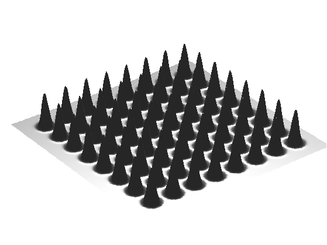
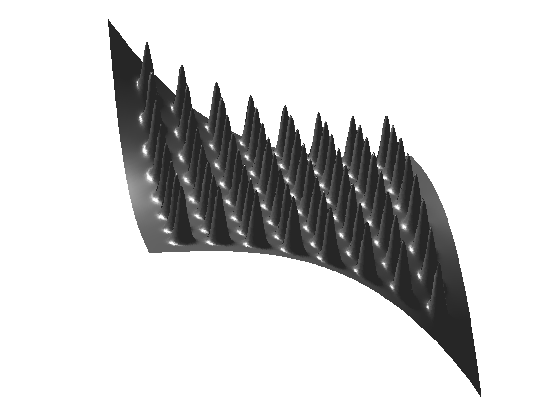
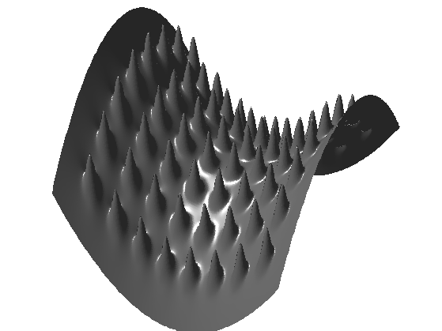
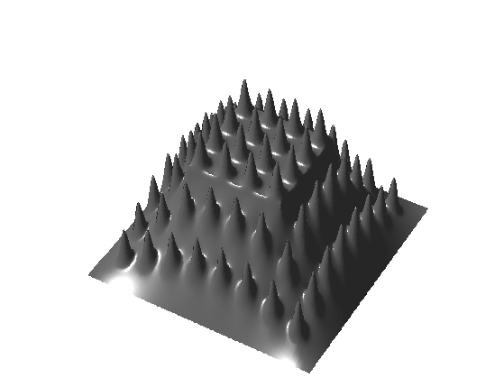
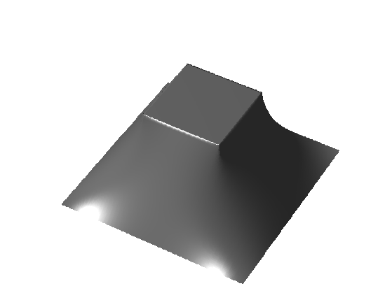
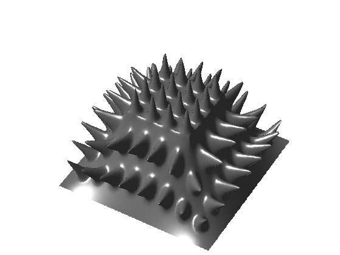
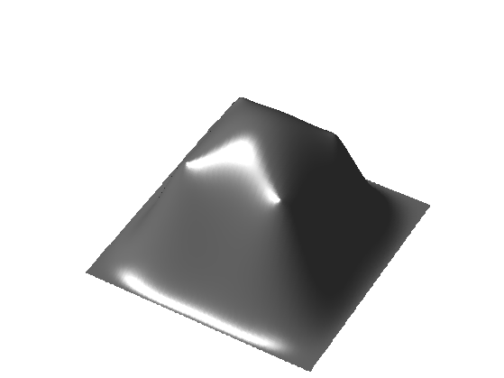
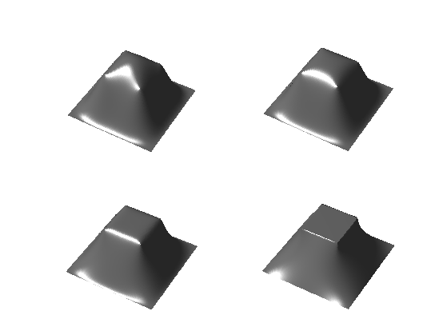

Mesh Deformation
This tour explores deformation of 2D mesh using Laplacian interpolation. The dense deformation field is obtained from a sparse set of displaced anchor point by computing harmonic interpolation.
Contents
Installing toolboxes and setting up the path.
You need to download the following files: signal toolbox, general toolbox and graph toolbox.
You need to unzip these toolboxes in your working directory, so that you have toolbox_signal, toolbox_general and toolbox_graph in your directory.
For Scilab user: you must replace the Matlab comment '%' by its Scilab counterpart '//'.
Recommandation: You should create a text file named for instance numericaltour.sce (in Scilab) or numericaltour.m (in Matlab) to write all the Scilab/Matlab command you want to execute. Then, simply run exec('numericaltour.sce'); (in Scilab) or numericaltour; (in Matlab) to run the commands.
Execute this line only if you are using Matlab.
getd = @(p)path(p,path); % scilab users must *not* execute this
Then you can add the toolboxes to the path.
getd('toolbox_signal/'); getd('toolbox_general/'); getd('toolbox_graph/');
Mesh Creation
We create a simple mesh with fine scale details.
We generate point on a square.
p = 150; [Y,X] = meshgrid(linspace(-1,1,p),linspace(-1,1,p)); vertex0 = [X(:)'; Y(:)'; zeros(1,p^2)]; n = size(vertex0,2);
We generate a triangulation of a square.
I = reshape(1:p^2,p,p); a = I(1:p-1,1:p-1); b = I(2:p,1:p-1); c = I(1:p-1,2:p); d = I(2:p,1:p-1); e = I(2:p,2:p); f = I(1:p-1,2:p); faces = cat(1, [a(:) b(:) c(:)], [d(:) e(:) f(:)])';
Width and height of the bumps.
sigma = .03; h = .35; q = 8;
Elevate the surface using bumps.
t = linspace(-1,1,q+2); t([1 length(t)]) = []; vertex = vertex0; for i=1:q for j=1:q d = (X(:)'-t(i)).^2 + (Y(:)'-t(j)).^2; vertex(3,:) = vertex(3,:) + h * exp( -d/(2*sigma^2) ); end end
Display the surface.
clf; plot_mesh(vertex,faces); view(3);
Compute its geometric (cotan) Laplacian
W = sparse(n,n); for i=1:3 i1 = mod(i-1,3)+1; i2 = mod(i ,3)+1; i3 = mod(i+1,3)+1; pp = vertex(:,faces(i2,:)) - vertex(:,faces(i1,:)); qq = vertex(:,faces(i3,:)) - vertex(:,faces(i1,:)); % normalize the vectors pp = pp ./ repmat( sqrt(sum(pp.^2,1)), [3 1] ); qq = qq ./ repmat( sqrt(sum(qq.^2,1)), [3 1] ); % compute angles ang = acos(sum(pp.*qq,1)); u = cot(ang); u = clamp(u, 0.01,100); W = W + sparse(faces(i2,:),faces(i3,:),u,n,n); W = W + sparse(faces(i3,:),faces(i2,:),u,n,n); end
Compute the symmetric Laplacian matrix.
d = full( sum(W,1) ); D = spdiags(d(:), 0, n,n); L = D - W;
Boundary Modification
We modify the domain by modifying its boundary.
Select boundary indexes.
I = find( abs(X(:))==1 | abs(Y(:))==1 );
Compute the deformation field (zeros outsize the handle, proportional to the normal otherwise).
Delta0 = zeros(3,n); d = ( vertex(1,I) + vertex(2,I) ) / 2; Delta0(3,I) = sign(d) .* abs(d).^3;
Modify the Laplacian to take into account the fixed handles.
L1 = L; L1(I,:) = 0; L1(I + (I-1)*n) = 1;
Compute the full deformation by solving for Laplacian=0 on each coordinate.
Delta = ( L1 \ Delta0' )';
Compute the deformed mesh.
vertex1 = vertex+Delta;
Display it.
clf; plot_mesh(vertex1,faces); view(-100,15);
Exercice 1: (check the solution) Perform a more complicated deformation of the boundary.
exo1;
Exercice 2: (check the solution) Move both the inside and the boundary.
exo2;
Exercice 3: (check the solution) Apply the mesh deformation method to a real mesh, with both large scale and fine scale details.
exo3;
Non-linear Deformation
Linear methods give poor results for large deformation.
It is possible to obtain better result by applying the linear deformation only to a low pass version of the mesh (coarse scale modifications). The remaining details are then added in the direction of the normal, in a local frame that is rotated to match the deformation of the coarse surface.
Exercice 4: (check the solution) Apply the deformation to the coarse mesh vertex0 to obtain vertex1. Important: you need to compute and use the cotan Laplacian of the coarse mesh, not of the original mesh!
exo4;
Compute the residual vector contribution along the normal (which is vertical).
normal = compute_normal(vertex0,faces); d = repmat( sum(normal .* (vertex-vertex0)), [3 1]);
Exercice 5: (check the solution) Add the normal contribution d.*normal to vertex1, but after replacing the normal of vertex0 by the normal of vertex1.
exo5;
Exercice 6: (check the solution) Try on other surfaces. How can you compute vertex0 for an arbitrary surface ?
exo6;
Bi-Laplacian Deformation
To take into account the bending of the surface, one can use higher order derivative to interpolate the deformation field.
The bi-laplacian LL corresponds to 4th order derivatives. It is the square of the Laplacian LL=L*L.
Exercice 7: (check the solution) Compute the bi-laplacian deformation of the coarse shape vertex0 by using LL instead of L. What do you observe ?
exo7;
Exercice 8: (check the solution) Compute the deformation obtained by moving from the Laplacian to the bi-laplacian, i.e. with t*L+(1-t)*LL for varying t.
exo8;
Exercice 9: (check the solution) Apply the full model (Laplacian, bi-Laplacian and non-linear deformation) to the deformation of a complicated mesh.
exo9;